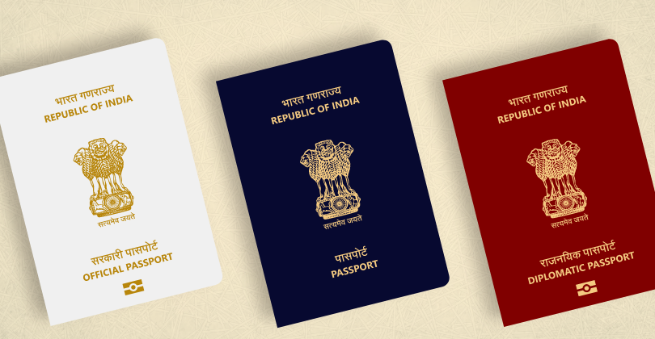

World's Most Powerful Passports 2024 List Released: Indian Passport Ranks At 82nd
 The Henley Passport Index has just released the World’s Most Powerful Passports 2024 List, and Singapore continues to dominate as the most powerful passport globally. According to the latest ranking, India's passport stands at 82nd, with Indian passport holders enjoying visa-free access to 58 countries. This includes popular travel destinations like Indonesia, Malaysia, and Thailand.
The Henley Passport Index has just released the World’s Most Powerful Passports 2024 List, and Singapore continues to dominate as the most powerful passport globally. According to the latest ranking, India's passport stands at 82nd, with Indian passport holders enjoying visa-free access to 58 countries. This includes popular travel destinations like Indonesia, Malaysia, and Thailand.
Top-Ranked Passports for 2024
The top passports for 2024 are dominated by countries offering access to the most destinations. Here's a breakdown of the top spots:
- Singapore - Visa-free access to 195 destinations
- France, Germany, Italy, Japan, Spain - Visa-free access to 192 destinations
- Austria, Finland, Ireland, Luxembourg, Netherlands, South Korea, Sweden - Visa-free access to 191 destinations
- United Kingdom, New Zealand, Norway, Belgium, Denmark, Switzerland - Visa-free access to 190 destinations
- Australia, Portugal - Visa-free access to 189 destinations
 Key Highlights: India, Pakistan, and Afghanistan's Rankings
India ranks 82nd with 58 destinations, offering easy access to countries like Indonesia, Malaysia, and Thailand. Notably, Pakistan is ranked 100th with only 33 destinations, while Afghanistan remains at the bottom of the index.
The Global Mobility Gap
Christian Kaelin, Chair of Henley and Partners, highlighted the growing disparity in global mobility. While the average number of visa-free destinations has almost doubled since 2006, the gap between top and bottom-ranked countries is wider than ever.
Stay Updated
For the latest updates and to track global mobility changes, check the Henley Passport Index website. It offers an interactive, real-time tool to track passport rankings worldwide.
Want to learn more about global mobility trends? Stay updated with the latest passport rankings by visiting the Henley Passport Index.
Visit Henley Passport Index